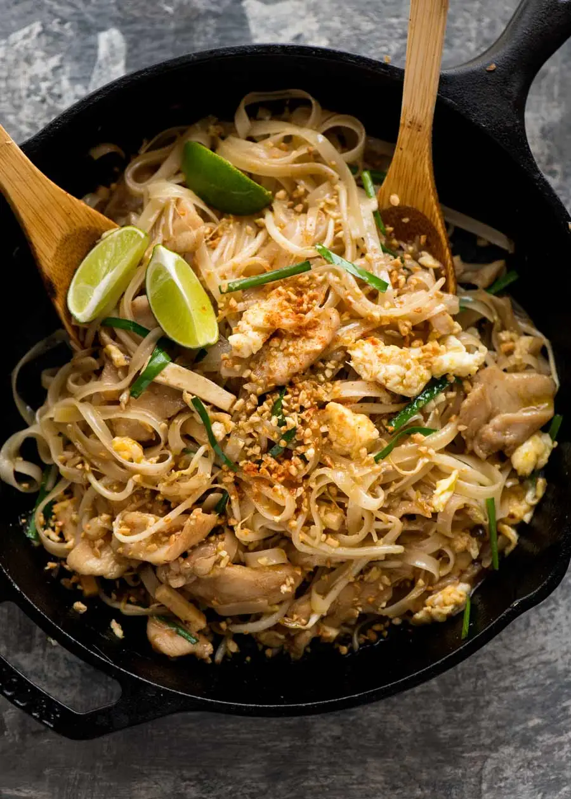

Pad Thai

A sweet and nutty pad thai
Pad thai is a stir-fried rice noodle dish commonly served as a street food in Thailand.
This recipe from Nagi lies in the middle between hardcore authentic to very basic westernised that lack the depth if flavor and are too sweet.
Ingredients
- Rice noodles
- Tamarind puree
- Brown sugar
- Fish sauce
- Oyster sauce
- Vegetable or canolia oil
- Onion
- Garlic
- Chicken
- Garlic cloves
- 2 eggs
- Beansprouts
- Tofu
- Garlic chives
- Chopped Peanuts
Steps
- Place noodles in a large bowl, pour over plenty of boiling water. Soak for 5 minutes
- Mix Sauce in small bowl
- Heat 2 tbsp oil in a large non stick pan (or well seasoned skillet) over high heat. Add garlic and onion, cook for 30 seconds
- Add chicken
- Push to one side of the pan, pour egg in on the other side. Scramble using the wooden spoon (add touch of extra oil if pan is too dry), then mix into chicken
- Add bean sprouts, tofu, noodles then Sauce
- Toss gently for about 1 1/2 minutes until Sauce is absorbed by the noodles.
- Add garlic chives and half the peanuts
- Sprinkle remianing peanuts and add more beansprouts and lime wedges on the side
- Serve!